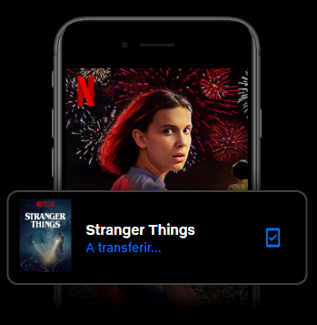
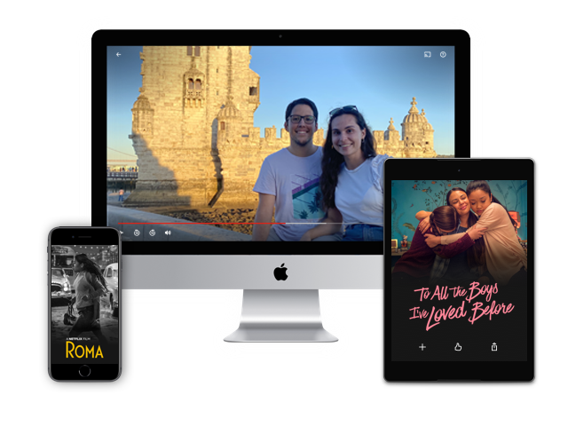

Veja a Cerqflix no seu televisor.
Smart TVs, Playstation, Xbox, Chromecast, Apple TV, leitores de Blu-ray e muito mais.


Transfira os seus programas para ver offline.
Guarde os seus favoritos e tenha sempre algo para ver.
Veja onde quiser.
Veja em streaming com acesso ilimitado a séries e filmes no seu telemóvel, tablet, computador e televisor, sem ter de pagar mais.


Crie perfis para crianças.
As crianças também poderão descobrir novas aventuras e encontrar os seus personagens favoritos num espaço dedicado, que está incluído na sua adesão.